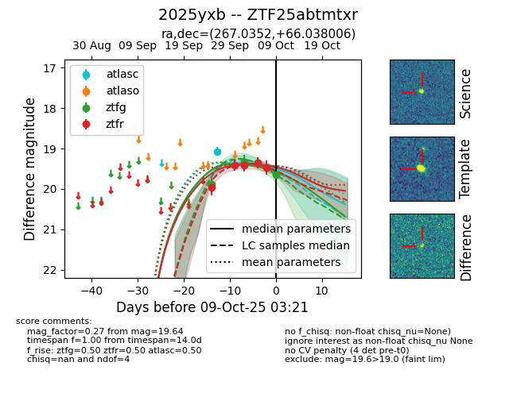
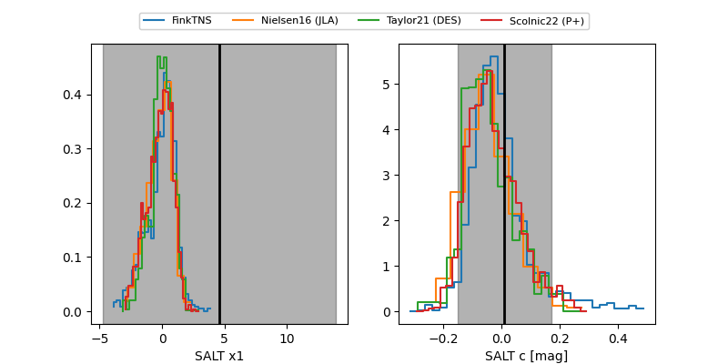

FINK: ZTF25abtmtxr
Lasair: ZTF25abtmtxr
ALeRCE: ZTF25abtmtxr
TNS: 2025yxb
YSE: 2025yxb
ZTF25abtmtxr (ztf,fink)
2025yxb (tns,yse)
equatorial (ra, dec) = (267.0352,+66.03801)
galactic (l, b) = (95.8080,+31.01406)


last atlasc=19.07, ztfg=19.64, ztfr=19.47
1 atlasc, 3 ztfg, 5 ztfr detections